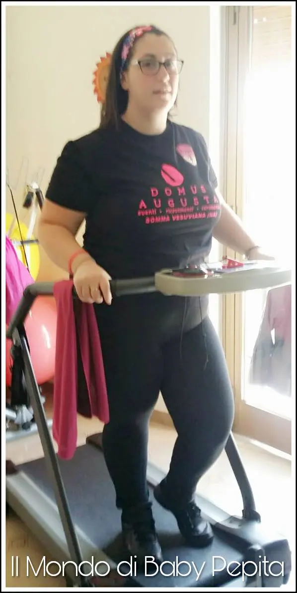
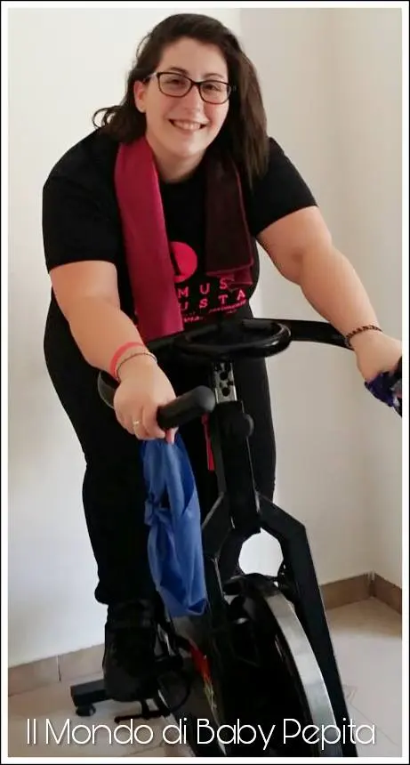
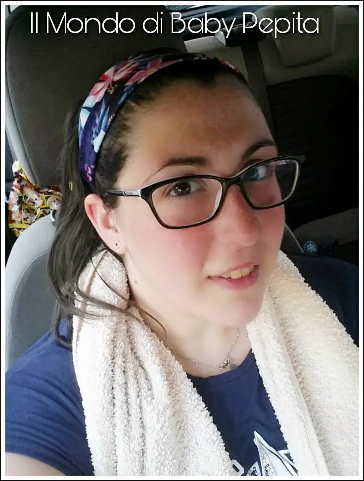
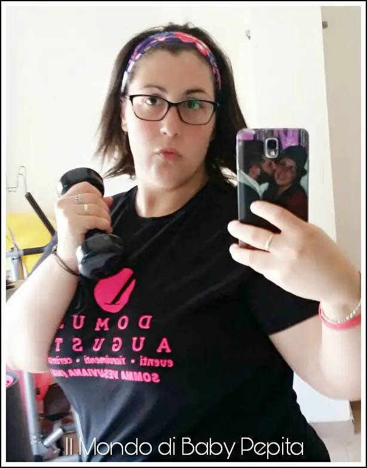
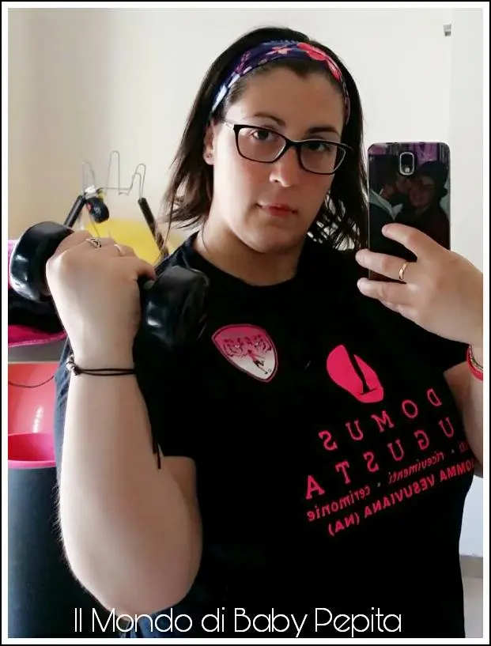

bioxo accessori per palestra
E proprio perché qui parliamo di tutto e di tutti gli hobby, oggi voglio parlarvi di due accessori per palestra . . due accessori importanti.

Il primo è un asciugamano ma non uno qualunque, un asciugamano di raffreddamento.
E' un tessuto traspirante ed è davvero sottile che non dà per niente l'idea che asciughi il sudore e invece è proprio così. E' privo di SOSTANZE CHIMICHE, che assorbono il sudore e abbassano la temperatura dando una sensazione di freschezza durante l'attività fisica. Piccole dimensioni che è davvero pratico. Disponibile in due colorazioni: rosa red and light blue.

Può essere usato anche come bandana quindi double Face.
Ideale per chi pratica sport all' aperto, al chiuso o allenamento corsa, escursionismo, Yoga Chilly Pad.
Per tutta la palestra in generale.
Ad un buon prezzo è un bell'asciugamano per chi fa sport e non vuole usare un comune asciugamano da bagno.
PREZZO: 7.00 €
Abbiamo poi un secondo accessorio utilissimo per tutti secondo me, ovvero è la
Fascia per capelli - accessori per la palestra.

E' antiscivolo quindi pensata apposta per chi fa sport e non vuol tenere il fastidio dei capelli sul viso.

Io in realtà lo consiglierei anche per noi donne che si truccano e nel momento del make-up abbiamo anche noi il fastidio dei capelli.
L'unica cosa che non mi piace molto è la fantasia a fiori :D ma a parte ciò la consiglio davvero.
Ideata in tessuto elastico ma resistente anche nel tempo.
Materiale misto dacron/elastan, confortevole e traspirante.
Potete trovarla in 4 fantasie diverse. Insomma, non avete più scuse per la palestra quotidiana.
PREZZO: 7.00 €

(ehm sì, uso sempre mia sorella per le foto e le faccio indossare tutti gli accessori per la palestra ahahah)..
Potete acquistare:
l'asciugamano QUI
la fascia per capelli QUI